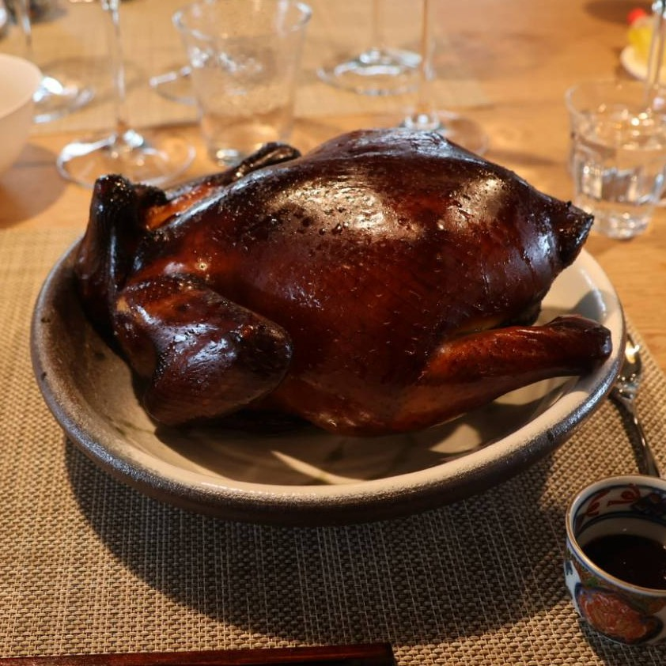
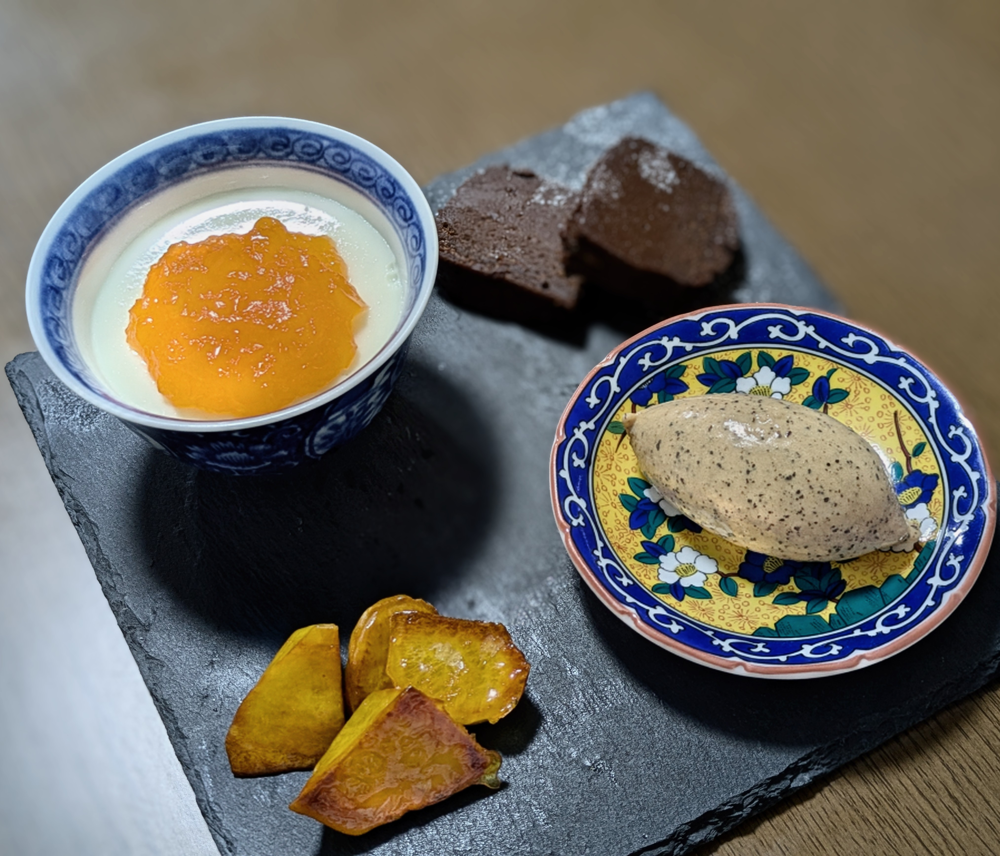
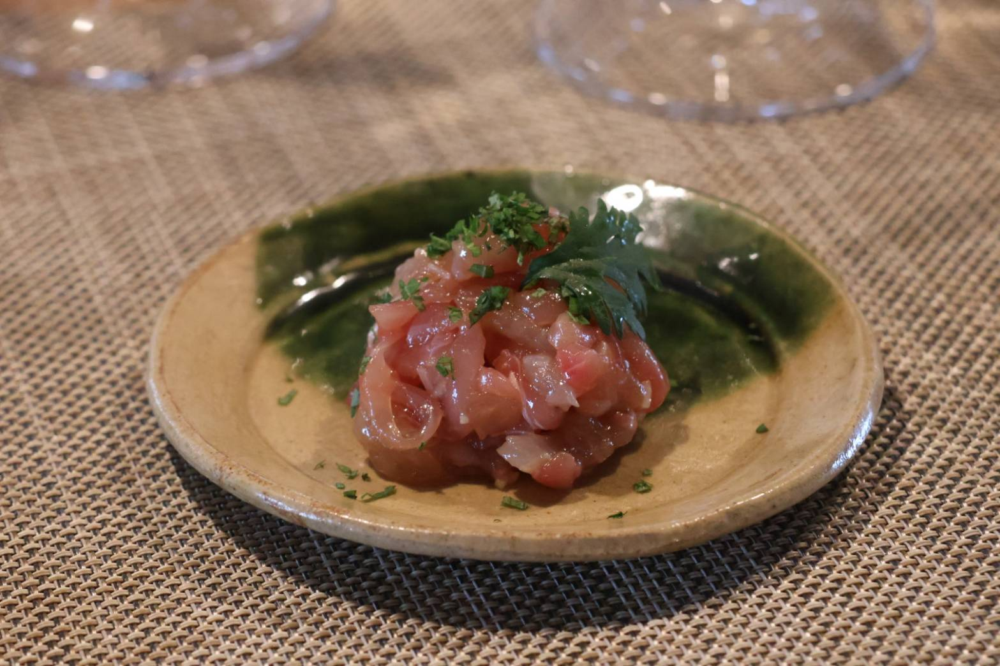
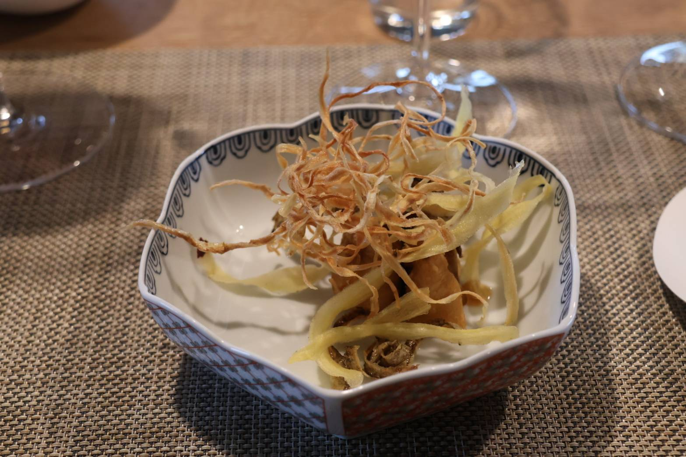
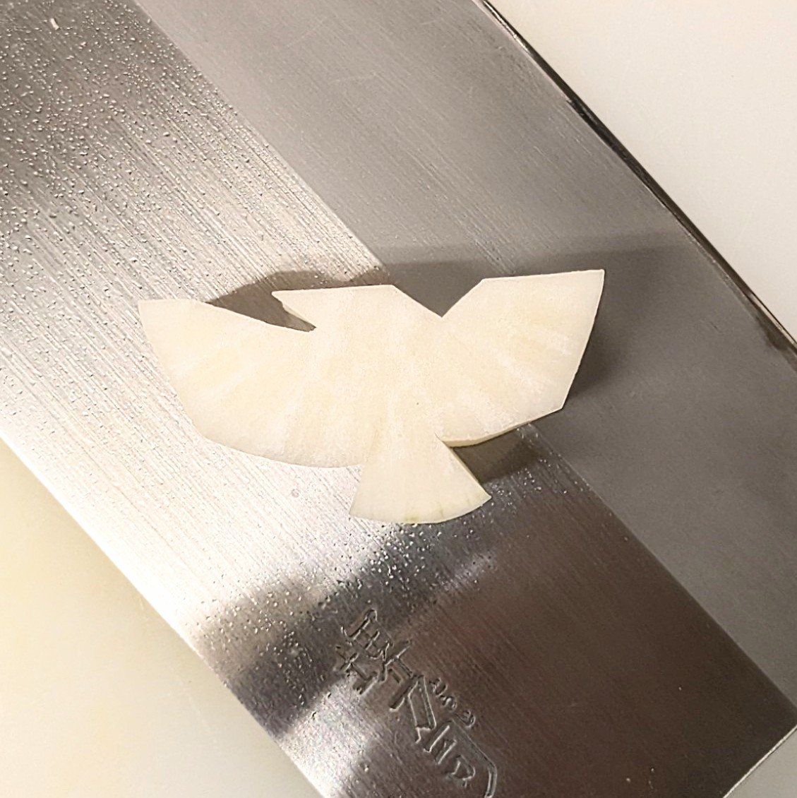

The Private Gastronomy
信州の旬と手仕事の真髄。
信州の旬と手仕事の真髄。
希彩の創作中華料理。
Scroll
About Kisai
中華房希彩（きさい）とは
希彩という名前は、私たちにとって大切な家族の名から一文字ずつ授かりました。
だからこそ、ここでお出しする料理は、すべてが妥協の無い「大切な誰かのために」という想いから生まれています。その日の湿度に合わせて粉を練り、心を込めて皮を包む。湯気が立ち上るその一瞬に、希彩という店に込めた私たちのすべてを注ぎ込んでいます。
厨房で奏でる調理の音、店内に満ちる香り。
信州の旬と職人の真髄が重なり合う、希彩の食卓へ。今日は、どんな彩りをお届けしましょうか。


Our Craftsmanship— 香りを紡ぐ、手包みの技
手打ち・手包みにこだわる理由
麺や餃子の皮を「一から手作業」でつくるのは、素材の持ち味を最大限に引き出すため。
その日の気候に合わせて熟成時間を繊細に見極め、職人がひとつずつ丁寧に仕立てています。
生地を練り、寝かせ、一つひとつ包み上げる。
湯気と共に立ち上る豊かな香りと、もっちりとした皮の中で弾ける信州の恵み。確かな手仕事が生む、ここでしか味わえない一皿をご堪能ください。
Anniversary
記念日・お祝いに
大切な節目を、希彩のおもてなしで。
人生の特別な「ハレの日」を、より心に残るものに。
お誕生日や結婚記念日、ご両家のお顔合わせなど、お客様の想いに寄り添ったお祝いの席を演出いたします。
- ◆ 特製メッセージプレート： 大切な方への贈り物として、デザートプレートにチョコペンでメッセージを添えてお出しします。想いを伝えるお手伝いをさせてください。
- ◆ お子様連れのご家族へ： 小さなお子様用カトラリーのほか、ベビーベッド・ベビーチェア（各1台限定・先着順）もございます。「オムツ替えのときだけベッドを使いたい」といったご要望も大歓迎です。 ※ご希望の際や、お子様のお食事の量・内容のご相談は、ご予約用の「ご要望・ご相談」欄へお気軽にご記入ください。
- ◆ あなただけの特別な一席のために： ご予約時に、どのようなお祝いの席か、ぜひお聞かせください。お子様向けの準備や、ご希望食材の調整など、精一杯ご要望にお応えします。アレルギーや苦手な食材についても、遠慮なくお申し付けください。

Gallery
情景




Opening Hours
営業時間・定休日
- 定休日：不定休
- お昼の献立：10:00 - 16:00（準備なくなり次第終了）
- 夜のコース：17:00 - （前日13:00までの完全予約制）
イベント開催時や貸切営業時はお休みとなる場合がございます。
ご来店の際は、事前にお電話または公式LINEにてご予約・お問い合わせをお願いいたします。
ご来店の際は、事前にお電話または公式LINEにてご予約・お問い合わせをお願いいたします。
Reservation
スムーズなご予約
LINEでのご予約が最もスムーズです。
下のボタンから「予約テンプレート」をコピーし、LINEに貼り付けて必要事項をご記入の上、送信してください。
※夜のコースをご希望の場合は、前日13:00までに要予約となります。
ご予約用テンプレート
コピーしました